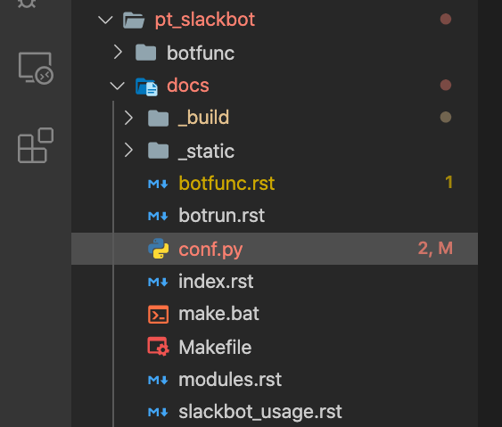
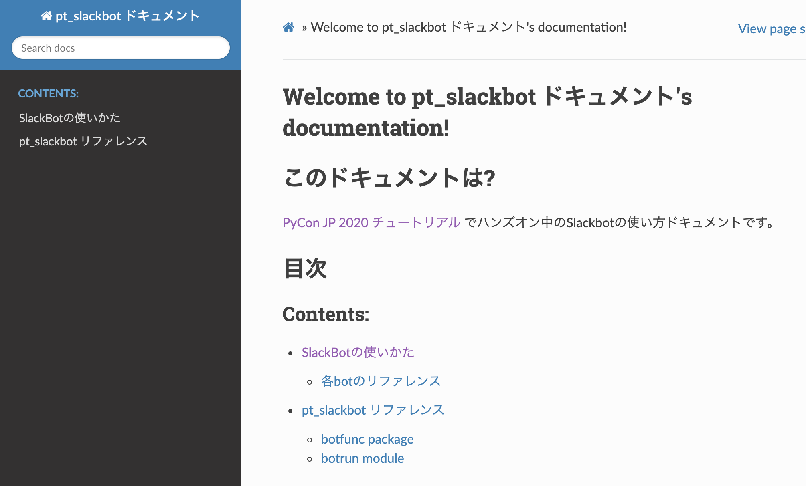

<!DOCTYPE html>
<html class="writer-html5" lang="ja" >
<head>
  <meta charset="utf-8">
  
  <meta name="viewport" content="width=device-width, initial-scale=1.0">
  
  <title>Sphinxでドキュメントを書こう &mdash; PyCon JP 2020 チュートリアル Slack Bot編 ドキュメント 2020.07.24 ドキュメント</title>
  

  
  <link rel="stylesheet" href="_static/css/theme.css" type="text/css" />
  <link rel="stylesheet" href="_static/pygments.css" type="text/css" />

  
  
  
  

  
  <!--[if lt IE 9]>
    <script src="_static/js/html5shiv.min.js"></script>
  <![endif]-->
  
    
      <script type="text/javascript" id="documentation_options" data-url_root="./" src="_static/documentation_options.js"></script>
        <script src="_static/jquery.js"></script>
        <script src="_static/underscore.js"></script>
        <script src="_static/doctools.js"></script>
        <script src="_static/language_data.js"></script>
        <script src="_static/translations.js"></script>
    
    <script type="text/javascript" src="_static/js/theme.js"></script>

    
    <link rel="index" title="索引" href="genindex.html" />
    <link rel="search" title="検索" href="search.html" />
    <link rel="prev" title="pytestでテストケースを導入する" href="pytest.html" /> 
</head>

<body class="wy-body-for-nav">

   
  <div class="wy-grid-for-nav">
    
    <nav data-toggle="wy-nav-shift" class="wy-nav-side">
      <div class="wy-side-scroll">
        <div class="wy-side-nav-search" >
          

          
            <a href="index.html" class="icon icon-home" alt="Documentation Home"> PyCon JP 2020 チュートリアル Slack Bot編 ドキュメント
          

          
          </a>

          
            
            
          

          
<div role="search">
  <form id="rtd-search-form" class="wy-form" action="search.html" method="get">
    <input type="text" name="q" placeholder="Search docs" />
    <input type="hidden" name="check_keywords" value="yes" />
    <input type="hidden" name="area" value="default" />
  </form>
</div>

          
        </div>

        
        <div class="wy-menu wy-menu-vertical" data-spy="affix" role="navigation" aria-label="main navigation">
          
            
            
              
            
            
              <p class="caption"><span class="caption-text">Contents:</span></p>
<ul class="current">
<li class="toctree-l1"><a class="reference internal" href="prepare.html">チュートリアル開始前の準備</a></li>
<li class="toctree-l1"><a class="reference internal" href="vscode.html">VS CodeとLive Shareの設定</a></li>
<li class="toctree-l1"><a class="reference internal" href="slackbot.html">Slackbotの作成</a></li>
<li class="toctree-l1"><a class="reference internal" href="pytest.html">pytestでテストケースを導入する</a></li>
<li class="toctree-l1 current"><a class="current reference internal" href="#">Sphinxでドキュメントを書こう</a><ul>
<li class="toctree-l2"><a class="reference internal" href="#id1">Sphinxの始め方</a></li>
<li class="toctree-l2"><a class="reference internal" href="#slackbot">Slackbotのドキュメントを書こう</a><ul>
<li class="toctree-l3"><a class="reference internal" href="#id2">Sphinxはじめの一歩</a><ul>
<li class="toctree-l4"><a class="reference internal" href="#id3">見出し</a></li>
<li class="toctree-l4"><a class="reference internal" href="#id4">リンク</a></li>
<li class="toctree-l4"><a class="reference internal" href="#id5">リスト</a></li>
<li class="toctree-l4"><a class="reference internal" href="#id6">画像</a></li>
<li class="toctree-l4"><a class="reference internal" href="#id7">コードブロック</a></li>
</ul>
</li>
<li class="toctree-l3"><a class="reference internal" href="#id8">ドキュメントの生成</a></li>
<li class="toctree-l3"><a class="reference internal" href="#toctree">toctreeディレクティブ</a></li>
<li class="toctree-l3"><a class="reference internal" href="#id9">Slackbotの説明文を書いてみよう</a></li>
</ul>
</li>
<li class="toctree-l2"><a class="reference internal" href="#id10">休憩5🍪☕</a></li>
<li class="toctree-l2"><a class="reference internal" href="#autodocapi">autodoc拡張機能を使ったAPIリファレンス作成</a><ul>
<li class="toctree-l3"><a class="reference internal" href="#docstirng">docstirngを書こう</a></li>
<li class="toctree-l3"><a class="reference internal" href="#docstring">docstringのスタイル</a></li>
<li class="toctree-l3"><a class="reference internal" href="#id11">docstringと型アノテーション</a></li>
<li class="toctree-l3"><a class="reference internal" href="#botdocstring">botの関数にdocstringを用意する</a></li>
<li class="toctree-l3"><a class="reference internal" href="#id13">Sphinxの設定</a></li>
<li class="toctree-l3"><a class="reference internal" href="#autodoc-sphinx-apidoc">autodoc拡張で半自動的にリファレンスを作成する: sphinx-apidocコマンド</a></li>
<li class="toctree-l3"><a class="reference internal" href="#api">APIリファレンス入のドキュメントを生成する</a></li>
</ul>
</li>
<li class="toctree-l2"><a class="reference internal" href="#id14">テーマを変更しよう</a></li>
</ul>
</li>
</ul>

            
          
        </div>
        
      </div>
    </nav>

    <section data-toggle="wy-nav-shift" class="wy-nav-content-wrap">

      
      <nav class="wy-nav-top" aria-label="top navigation">
        
          <i data-toggle="wy-nav-top" class="fa fa-bars"></i>
          <a href="index.html">PyCon JP 2020 チュートリアル Slack Bot編 ドキュメント</a>
        
      </nav>


      <div class="wy-nav-content">
        
        <div class="rst-content">
        
          


<div role="navigation" aria-label="breadcrumbs navigation">

  <ul class="wy-breadcrumbs">
    
      <li><a href="index.html" class="icon icon-home"></a> &raquo;</li>
        
      <li>Sphinxでドキュメントを書こう</li>
    
    
      <li class="wy-breadcrumbs-aside">
        
            
            <a href="_sources/sphinx.rst.txt" rel="nofollow"> View page source</a>
          
        
      </li>
    
  </ul>

  
  <hr/>
</div>
          <div role="main" class="document" itemscope="itemscope" itemtype="http://schema.org/Article">
           <div itemprop="articleBody">
            
  <div class="section" id="sphinx">
<h1>Sphinxでドキュメントを書こう<a class="headerlink" href="#sphinx" title="このヘッドラインへのパーマリンク">¶</a></h1>
<p>SphinxはPythonの公式ドキュメントやサードパーティライブラリ、またほかの言語や書籍にも利用されるドキュメンテーションツールです。HTMLやPDFでドキュメントを生成できます。</p>
<p>公式サイト: <a class="reference external" href="https://www.sphinx-doc.org/en/master/">Overview — Sphinx 4.0.0+ documentation</a></p>
<p>日本語版の公式サイト: <a class="reference external" href="https://www.sphinx-doc.org/ja/master/">概要 — Sphinx 4.0.0+/ba0e5d0ec ドキュメント</a></p>
<p>Sphinxはドキュメントの書きやすさや豊富な拡張、テーマが利用できます。オープンソースプロジェクトのドキュメントや、企業内のドキュメントでも利用されています。</p>
<p>今回はSlackbotのドキュメントを作りましょう。以下のドキュメントの作成を体験します。</p>
<ul class="simple">
<li><p>Slackbotの使い方ドキュメントを用意する</p></li>
<li><p>autodoc拡張機能を使って、bot関数のリファレンスを作成する</p></li>
</ul>
<div class="section" id="id1">
<h2>Sphinxの始め方<a class="headerlink" href="#id1" title="このヘッドラインへのパーマリンク">¶</a></h2>
<p>Sphinxもローカル開発環境を作成した段階でインストールされています。もし <code class="docutils literal notranslate"><span class="pre">sphinx-quickstart</span></code> というコマンドが見つからない場合はpipコマンドでインストールします。</p>
<div class="highlight-default notranslate"><div class="highlight"><pre><span></span><span class="p">(</span><span class="o">.</span><span class="n">venv</span><span class="p">)</span><span class="o">&gt;</span> <span class="n">pip</span> <span class="n">install</span> <span class="o">-</span><span class="n">U</span> <span class="n">Sphinx</span>
</pre></div>
</div>
<p>Sphinxはドキュメントを作成するひな形の環境を用意する <code class="docutils literal notranslate"><span class="pre">sphinx-quickstart</span></code> コマンドがあります。こちらを利用してひな形を作りましょう</p>
<div class="highlight-none notranslate"><div class="highlight"><pre><span></span># Windows10の例

(.venv) pycon-jp-2020-tutorial&gt; cd pt_slackbot
\pt_slackbot&gt; sphinx-quickstart.exe .\docs\

# macOSの例

(.venv) pycon-jp-2020-tutorial$ cd pt_slackbot
pt_slackbot&gt; sphinx-quickstart ./docs/

# 以下Windowsの実行例

Welcome to the Sphinx 3.1.2 quickstart utility.

Please enter values for the following settings (just press Enter to
accept a default value, if one is given in brackets).

Selected root path: .\docs\

You have two options for placing the build directory for Sphinx output.
Either, you use a directory &quot;_build&quot; within the root path, or you separate
&quot;source&quot; and &quot;build&quot; directories within the root path.
&gt; Separate source and build directories (y/n) [n]: n

The project name will occur in several places in the built documentation.
&gt; Project name: pt_slackbot ドキュメント
&gt; Author name(s): Hiroshi Sano
&gt; Project release []: 2020.08.30

If the documents are to be written in a language other than English,
you can select a language here by its language code. Sphinx will then
translate text that it generates into that language.

For a list of supported codes, see
https://www.sphinx-doc.org/en/master/usage/configuration.html#confval-language.
&gt; Project language [en]: ja

Creating file C:\Users\hiroshi\Documents\pycon-jp-2020-tutorial\pt_slackboCreating file C:\Users\hiroshi\Documents\pycon-jp-2020-tutorial\pt_slackboCreating file C:\Users\hiroshi\Documents\pycon-jp-2020-tutorial\pt_slackbot\docs\Makefile.
Creating file C:\Users\hiroshi\Documents\pycon-jp-2020-tutorial\pt_slackbot\docs\make.bat.

Finished: An initial directory structure has been created.

You should now populate your master file C:\Users\hiroshi\Documents\pycon-jp-2020-tutorial\pt_slackbot\docs\index.rst and create other documentation
source files. Use the Makefile to build the docs, like so:
make builder
where &quot;builder&quot; is one of the supported builders, e.g. html, latex or linkcheck.

(pycon-jp-2020-tutorial) PS C:\Users\hiroshi\Documents\pycon-jp-2020-tutorial\pt_slackbot&gt; cd .\docs\
</pre></div>
</div>
<p>今回のSlackbotのドキュメントは以下のような構造で作成します。チュートリアルで利用するディレクトリやファイルに付いて解説します。</p>
<div class="highlight-default notranslate"><div class="highlight"><pre><span></span>.\pt_slackbot\docs
├── Makefile # sphinxのドキュメント生成をmakeコマンドで行うときのmakefile
├── make.bat # makefileのWindowsバージョン
├── _build # ビルドされた結果が入るディレクトリ
├── conf.py # Sphinxの設定ファイル
├── index.rst # 最初に生成されるrstファイル。HTMLでビルドした場合のindex.html相当
</pre></div>
</div>
</div>
<div class="section" id="slackbot">
<h2>Slackbotのドキュメントを書こう<a class="headerlink" href="#slackbot" title="このヘッドラインへのパーマリンク">¶</a></h2>
<p>それでは、Slackbotのドキュメントを書きましょう。あらかじめ用意してあるファイルをコピーして説明文を載せていきましょう。</p>
<p>Sphinxではドキュメントの作成に、reStructuredTextというプレーンテキスト形式の軽量マークアップ言語を利用します。短縮名として「reST」とも言われます。</p>
<p>reStructuredTextには、記法やディレクティブという概念があります。記法は見出しやリストやURLリンクなどの文章の装飾や意味合いの定義を付け加えます。ディレクティブも文章の意味合いを定義するものに使いますが、文章を書く上で便利な機能を提供しています。</p>
<p>Sphinxは標準でも多数の記法、ディレクティブに対応しています。またサードパーティが提供する拡張機能も利用できます。</p>
<div class="section" id="id2">
<h3>Sphinxはじめの一歩<a class="headerlink" href="#id2" title="このヘッドラインへのパーマリンク">¶</a></h3>
<p>いくつかの記法を利用してindex.rstファイルへ試しに書いてみましょう。</p>
<div class="section" id="id3">
<h4>見出し<a class="headerlink" href="#id3" title="このヘッドラインへのパーマリンク">¶</a></h4>
<div class="highlight-none notranslate"><div class="highlight"><pre><span></span>見出し1
==========

見出し2
----------
</pre></div>
</div>
<div class="admonition note">
<p class="admonition-title">注釈</p>
<p>見出し（セクション）を定義するときのライン（アンダーライン）は &quot;<code class="docutils literal notranslate"><span class="pre">=</span> <span class="pre">-</span> <span class="pre">`</span> <span class="pre">:</span> <span class="pre">'</span> <span class="pre">&quot;</span> <span class="pre">~</span> <span class="pre">^</span> <span class="pre">_</span> <span class="pre">*</span> <span class="pre">+</span> <span class="pre">#</span> <span class="pre">&lt;</span> <span class="pre">&gt;</span></code>&quot; が利用できます。見出しのレベルはアンダーライン記号の出現順で記号自体にレベルの概念はありませんが、Pythonドキュメントの慣例があります。詳しくはsphinxのドキュメントにて</p>
<p>ref: <a class="reference external" href="https://www.sphinx-doc.org/ja/master/usage/restructuredtext/basics.html#sections">reStructuredText入門 — Sphinx 4.0.0+/5ade6b721 ドキュメント</a></p>
</div>
</div>
<div class="section" id="id4">
<h4>リンク<a class="headerlink" href="#id4" title="このヘッドラインへのパーマリンク">¶</a></h4>
<div class="highlight-none notranslate"><div class="highlight"><pre><span></span>`Title &lt;http://link&gt;`_
</pre></div>
</div>
</div>
<div class="section" id="id5">
<h4>リスト<a class="headerlink" href="#id5" title="このヘッドラインへのパーマリンク">¶</a></h4>
<div class="highlight-none notranslate"><div class="highlight"><pre><span></span>- 箇条書きは 「-」
</pre></div>
</div>
</div>
<div class="section" id="id6">
<h4>画像<a class="headerlink" href="#id6" title="このヘッドラインへのパーマリンク">¶</a></h4>
<div class="highlight-none notranslate"><div class="highlight"><pre><span></span>.. image:: path
</pre></div>
</div>
</div>
<div class="section" id="id7">
<h4>コードブロック<a class="headerlink" href="#id7" title="このヘッドラインへのパーマリンク">¶</a></h4>
<div class="highlight-none notranslate"><div class="highlight"><pre><span></span>.. code-block:: python

    &gt;&gt;&gt;print(&quot;hello Sphinx!!&quot;)
</pre></div>
</div>
<p>そのほかの記法 : <a class="reference external" href="https://quick-restructuredtext.readthedocs.io/en/latest/">早わかり reStructuredText — Quick reStructuredText 0.1 documentation</a></p>
</div>
</div>
<div class="section" id="id8">
<h3>ドキュメントの生成<a class="headerlink" href="#id8" title="このヘッドラインへのパーマリンク">¶</a></h3>
<p>ドキュメントをhtmlで生成する場合は <code class="docutils literal notranslate"><span class="pre">sphinx-quickstart</span></code> コマンドが生成したmakeファイルを使うと簡単に生成できます。</p>
<div class="highlight-default notranslate"><div class="highlight"><pre><span></span># Windows 10ならmake.bat
(.venv) pt_slackbot&gt; cd docs
(.venv) docs&gt; .\make.bat html

# macOSならmakefileがそのまま扱えます
(.venv)pt_slackbot$ cd docs
(.venv)docs$ make html
</pre></div>
</div>
<p>生成されたhtmlはPythonの簡易httpサーバーを利用してブラウザで確認できます。別のターミナルを開いて実行してください。</p>
<div class="highlight-default notranslate"><div class="highlight"><pre><span></span># 別のターミナルを開いて実行してください。VS Codeなら「ターミナルの分割」機能が便利です。
# ポート指定することでhttpサーバーのポートを変更できます。今回は8080版を利用しています。

# Windows 10
(.venv) pt_slackbot&gt; cd _build\html
(.venv) html&gt; python -m http.server 8080

# macOS
(.venv) pt_slackbot$ cd _build/html
(.venv) html&amp; python -m http.server 8080
</pre></div>
</div>

<p>Windows 10の場合は、ファイヤーウォールの許可が表示されるので、適切な設定をしたうえで許可をしてください。（プライベートネットワークのみにすることをオススメします）</p>
</div>
<div class="section" id="toctree">
<h3>toctreeディレクティブ<a class="headerlink" href="#toctree" title="このヘッドラインへのパーマリンク">¶</a></h3>
<p>sphinxはドキュメントの構造を自動的に生成可能なツールです。ドキュメントの目次を作成したいときにはtoctreeディレクティブを利用します。</p>
<p><code class="docutils literal notranslate"><span class="pre">index.rst</span></code> には最初からtoctreeディレクティブが自動的に生成されます。</p>
<div class="highlight-none notranslate"><div class="highlight"><pre><span></span>.. toctree::
    :maxdepth: 2
    :caption: Contents:

    # この行から目次に追加したいrstファイルの名称を追加する
</pre></div>
</div>
</div>
<div class="section" id="id9">
<h3>Slackbotの説明文を書いてみよう<a class="headerlink" href="#id9" title="このヘッドラインへのパーマリンク">¶</a></h3>
<p>このチュートリアルで作成しているSlackbotの使い方をドキュメントとして書いてみましょう。</p>
<p><code class="docutils literal notranslate"><span class="pre">slackbot_usage.rst</span></code> ファイルを作成して、botの使い方を書いていきます。</p>
<p>こちらの資料を見ながら写経したり、自由に記載してみてください。</p>
<p><a class="reference external" href="https://github.com/py-suruga/pycon-jp-2020-tutorial/tree/master/tutorial_docs/step/sphinx-1">pycon-jp-2020-tutorial/tutorial_docs/step/sphinx-1</a></p>
<p>最後に <code class="docutils literal notranslate"><span class="pre">index.rst</span></code> のtoctreeディレクティブに <code class="docutils literal notranslate"><span class="pre">slackbot_usage</span></code> を追加します。 rstファイルの拡張子を外したファイル名のみにしてください。</p>
<div class="highlight-none notranslate"><div class="highlight"><pre><span></span>.. toctree::
    :maxdepth: 2
    :caption: Contents:

    slackbot_usage # .rst の拡張子はつけない
</pre></div>
</div>
</div>
</div>
<div class="section" id="id10">
<h2>休憩5🍪☕<a class="headerlink" href="#id10" title="このヘッドラインへのパーマリンク">¶</a></h2>
<p>以上まで、sphinxの環境用意とreStructuredTextの簡単な記法を扱いました。その他にも様々な機能が備わっているので、公式ドキュメントをぜひのぞいてみましょう。</p>
<p>...といっていると頭を使いすぎてしまうと思うので、ここで休憩にします。おやつとコーヒーでリフレッシュしましょう。</p>

</div>
<div class="section" id="autodocapi">
<h2>autodoc拡張機能を使ったAPIリファレンス作成<a class="headerlink" href="#autodocapi" title="このヘッドラインへのパーマリンク">¶</a></h2>
<p>Sphinxには、Pythonのdocstringからクラスや関数の使い方を半自動的にリファレンスとして取り込む、autodoc拡張機能があります。</p>
<p><a class="reference external" href="https://www.sphinx-doc.org/ja/master/usage/extensions/autodoc.html">sphinx.ext.autodoc -- docstringからのドキュメントの取り込み — Sphinx 4.0.0+/ba0e5d0ec ドキュメント</a></p>
<p>ここからは、botで定義した関数のリファレンスを作成してみましょう。</p>
<div class="section" id="docstirng">
<h3>docstirngを書こう<a class="headerlink" href="#docstirng" title="このヘッドラインへのパーマリンク">¶</a></h3>
<p>autodoc拡張を使うためには、pythonのクラスや関数にdocstringを追加する必要があります。</p>
<p>docstringはPythonのクラスや関数に書き込めるドキュメントです。文字列リテラルという <code class="docutils literal notranslate"><span class="pre">&quot;&quot;&quot;クオーテーション3つでくくった文字列&quot;&quot;&quot;</span></code> で表現します。</p>
<div class="admonition note">
<p class="admonition-title">注釈</p>
<p>docstringはPython公式ドキュメントで厳密な定義があります。</p>
<p><a class="reference external" href="https://docs.python.org/ja/3/glossary.html?highlight=docstring">https://docs.python.org/ja/3/glossary.html?highlight=docstring</a></p>
</div>
<p>docstringの例は以下の通りです。</p>
<div class="highlight-python notranslate"><div class="highlight"><pre><span></span><span class="gp">&gt;&gt;&gt; </span><span class="k">def</span> <span class="nf">hello_docstring</span><span class="p">():</span>
<span class="gp">... </span>    <span class="sd">&quot;&quot;&quot;</span>
<span class="gp">... </span><span class="sd">    この部分に文字列を入れるとdocstringとして扱われます。</span>
<span class="gp">... </span><span class="sd">    &quot;&quot;&quot;</span>
<span class="gp">... </span>    <span class="k">pass</span>
</pre></div>
</div>
<p>docstringはPythonのドキュメンテーションに深くかかわる機能です。Python内でも呼び出すことが可能で、help関数を使うことで、関数やクラスのdocstringを参照できます。</p>
<div class="highlight-python notranslate"><div class="highlight"><pre><span></span><span class="gp">&gt;&gt;&gt; </span><span class="n">help</span><span class="p">(</span><span class="n">hello_docstring</span><span class="p">)</span>
<span class="go">Help on function hello_docstring in module __main__:</span>

<span class="go">hello_docstring()</span>
<span class="go">    この部分に文字列を入れるとdocstringとして扱われます。</span>
</pre></div>
</div>
</div>
<div class="section" id="docstring">
<h3>docstringのスタイル<a class="headerlink" href="#docstring" title="このヘッドラインへのパーマリンク">¶</a></h3>
<p>docstringの記述方法にはいくつかのスタイルがあります。標準ではこのようなスタイルになります。</p>
<div class="highlight-python notranslate"><div class="highlight"><pre><span></span><span class="k">def</span> <span class="nf">search_online_event</span><span class="p">(</span><span class="n">ym</span><span class="p">):</span>
    <span class="sd">&quot;&quot;&quot;</span>
<span class="sd">    :param ym: connpassのAPIに渡す ymパラメータ。 yyyymm の6文字で年月を表す</span>
<span class="sd">    :type str: str # 文字列</span>
<span class="sd">    :returns: botに渡す文字列を返します</span>
<span class="sd">    :rtype: str</span>

<span class="sd">    request_connpass_apiで受け取ったレスポンスを元にbotに渡す文字列を生成します</span>
<span class="sd">    &quot;&quot;&quot;</span>
    <span class="c1"># 以降処理が続く..</span>
</pre></div>
</div>
<p>この他にも、GoogleやNumpyプロジェクトが提唱するスタイルもあります。それぞれ特徴がありますが、このチュートリアルでは Googleスタイルを扱います。</p>
<p><a class="reference external" href="https://www.sphinx-doc.org/ja/1.6/ext/example_google.html#example-google">GoogleスタイルのPython Docstringsの例 — Sphinx 1.6.7 ドキュメント</a></p>
<p>Googleスタイルはシンプルな表現であるため、docstringを最初に書く際にはオススメです。</p>
<div class="highlight-python notranslate"><div class="highlight"><pre><span></span><span class="k">def</span> <span class="nf">search_online_event</span><span class="p">(</span><span class="n">ym</span><span class="p">):</span>
    <span class="sd">&quot;&quot;&quot;</span>
<span class="sd">    Args:</span>
<span class="sd">        ym : connpassのAPIに渡す ymパラメータ。 yyyymm の6文字で年月を表す</span>
<span class="sd">    Returns:</span>
<span class="sd">        botに渡す文字列を返します</span>

<span class="sd">    request_connpass_apiで受け取ったレスポンスを元にbotに渡す文字列を生成します</span>
<span class="sd">    &quot;&quot;&quot;</span>
    <span class="c1"># 以降処理が続く..</span>
</pre></div>
</div>
<div class="admonition note">
<p class="admonition-title">注釈</p>
<p>Numpyスタイルの紹介もします。Numpyスタイルは縦に長くなりますが、テキストのみでも読みやすいのが特徴です。</p>
<p><a class="reference external" href="https://www.sphinx-doc.org/ja/1.6/ext/example_numpy.html#example-numpy">NumPyスタイルPython Docstringsの例 — Sphinx 1.6.7 ドキュメント</a></p>
<div class="highlight-python notranslate"><div class="highlight"><pre><span></span><span class="k">def</span> <span class="nf">search_online_event</span><span class="p">(</span><span class="n">ym</span><span class="p">):</span>
    <span class="sd">&quot;&quot;&quot;</span>
<span class="sd">    Parameters</span>
<span class="sd">    ----------</span>
<span class="sd">    ym : str</span>
<span class="sd">        connpassのAPIに渡す ymパラメータ。 yyyymm の6文字で年月を表す</span>

<span class="sd">    Returns</span>
<span class="sd">    -------</span>
<span class="sd">    str</span>
<span class="sd">        botに渡す文字列を返します</span>

<span class="sd">    request_connpass_apiで受け取ったレスポンスを元にbotに渡す文字列を生成します</span>
<span class="sd">    &quot;&quot;&quot;</span>
    <span class="c1"># 以降処理が続く..</span>
</pre></div>
</div>
</div>
</div>
<div class="section" id="id11">
<h3>docstringと型アノテーション<a class="headerlink" href="#id11" title="このヘッドラインへのパーマリンク">¶</a></h3>
<p>docstringは、もともと関数/メソッドの引数（Args）の説明や戻り値（Returns）等に型の種類を宣言できます。この型宣言自体はPython側に直接影響は有りません（Pythonは動的型定義の言語です）。</p>
<p>しかし予め定義することでPythonに対応したIDEや型チェッカー( <a class="reference external" href="https://mypy.readthedocs.io/en/stable/index.html">Mypy</a> 等）を使うことで入力補完機能やチェッカーによる警告機能を使うことができます。</p>
<div class="highlight-python notranslate"><div class="highlight"><pre><span></span><span class="c1"># Googleスタイルです</span>
<span class="k">def</span> <span class="nf">search_online_event</span><span class="p">(</span><span class="n">ym</span><span class="p">):</span>
    <span class="sd">&quot;&quot;&quot;</span>
<span class="sd">    Args:</span>
<span class="sd">        ym (str): connpassのAPIに渡す ymパラメータ。 yyyymm の6文字で年月を表す</span>
<span class="sd">    Returns:</span>
<span class="sd">        str: botに渡す文字列を返します</span>

<span class="sd">    request_connpass_apiで受け取ったレスポンスを元にbotに渡す文字列を生成します</span>
<span class="sd">    &quot;&quot;&quot;</span>
    <span class="c1"># 以降処理が続く..</span>
</pre></div>
</div>
<p>Python3から型アノテーションという、定義時に型を明言する機能が追加されました。Python3.0から関数の引数や戻り値に対してのアノテーションが扱えます。</p>
<p><a class="reference external" href="https://www.python.org/dev/peps/pep-3107/">PEP 3107 -- Function Annotations | Python.org</a></p>
<p>Sphinxの現行バージョンとautodoc拡張は型アノテーションを使うことで、宣言している型の種類を出力できるようになります。</p>
<div class="highlight-python notranslate"><div class="highlight"><pre><span></span><span class="c1"># Googleスタイルです</span>
<span class="k">def</span> <span class="nf">search_online_event</span><span class="p">(</span><span class="n">ym</span><span class="p">:</span> <span class="nb">str</span><span class="p">)</span> <span class="o">-&gt;</span> <span class="nb">str</span><span class="p">:</span>
    <span class="sd">&quot;&quot;&quot;</span>
<span class="sd">    Args:</span>
<span class="sd">        ym : connpassのAPIに渡す ymパラメータ。 yyyymm の6文字で年月を表す</span>
<span class="sd">    Returns:</span>
<span class="sd">        botに渡す文字列を返します</span>

<span class="sd">    request_connpass_apiで受け取ったレスポンスを元にbotに渡す文字列を生成します</span>
<span class="sd">    &quot;&quot;&quot;</span>

    <span class="c1"># 以降処理が続く..</span>
</pre></div>
</div>
<div class="admonition note">
<p class="admonition-title">注釈</p>
<p>docstringの標準なスタイルでの型宣言, 型アノテーションを用いた例も紹介します。</p>
<p>docstringに型宣言もありバージョン</p>
<div class="highlight-python notranslate"><div class="highlight"><pre><span></span><span class="k">def</span> <span class="nf">search_online_event</span><span class="p">(</span><span class="n">ym</span><span class="p">):</span>
    <span class="sd">&quot;&quot;&quot;</span>
<span class="sd">    :param ym: connpassのAPIに渡す ymパラメータ。 yyyymm の6文字で年月を表す</span>
<span class="sd">    :type str: str # 文字列</span>
<span class="sd">    :returns: botに渡す文字列を返します</span>
<span class="sd">    :rtype: str</span>

<span class="sd">    request_connpass_apiで受け取ったレスポンスを元にbotに渡す文字列を生成します</span>
<span class="sd">    &quot;&quot;&quot;</span>
    <span class="c1"># 以降処理が続く..</span>
</pre></div>
</div>
<p>型アノテーションバージョン</p>
<div class="highlight-python notranslate"><div class="highlight"><pre><span></span><span class="k">def</span> <span class="nf">search_online_event</span><span class="p">(</span><span class="n">ym</span><span class="p">:</span> <span class="nb">str</span><span class="p">)</span> <span class="o">-&gt;</span> <span class="nb">str</span><span class="p">:</span>
    <span class="sd">&quot;&quot;&quot;</span>
<span class="sd">    :param ym: connpassのAPIに渡す ymパラメータ。 yyyymm の6文字で年月を表す</span>
<span class="sd">    :returns: botに渡す文字列を返します</span>

<span class="sd">    request_connpass_apiで受け取ったレスポンスを元にbotに渡す文字列を生成します</span>
<span class="sd">    &quot;&quot;&quot;</span>
    <span class="c1"># 以降処理が続く..</span>
</pre></div>
</div>
</div>
</div>
<div class="section" id="botdocstring">
<h3>botの関数にdocstringを用意する<a class="headerlink" href="#botdocstring" title="このヘッドラインへのパーマリンク">¶</a></h3>
<p>botの各関数にdocstringを追加しましょう。例として挨拶botとconnpassbotのdocstringを書きます。</p>
<ul class="simple">
<li><p>挨拶bot: ランダムに天気情報を返す関数</p></li>
<li><p>connpassbot: jsonの取得関数、botが答える文字列生成の関数</p></li>
</ul>
<p>こちらの資料を見ながら写経しましょう。説明文は自由に変更するのも良いでしょう。</p>
<p><a class="reference external" href="https://github.com/py-suruga/pycon-jp-2020-tutorial/tree/master/tutorial_docs/step/sphinx-1">pycon-jp-2020-tutorial/tutorial_docs/step/sphinx-1</a></p>
<div class="admonition note">
<p class="admonition-title">注釈</p>
<p>そのほかの関数は、模範解答からファイルをコピーしましょう。</p>
<ul class="simple">
<li><p>天気bot: xml取得関数、botが答える文字列生成の関数</p></li>
<li><p>botrunのメッセージハンドル（botの登録方法を記載する）</p></li>
</ul>
</div>
</div>
<div class="section" id="id13">
<h3>Sphinxの設定<a class="headerlink" href="#id13" title="このヘッドラインへのパーマリンク">¶</a></h3>
<p>autodoc拡張機能はSphinxの設定で有効にする必要があります。Sphinxの設定は <code class="docutils literal notranslate"><span class="pre">sphinx-quickstart</span></code> コマンドで作成したひな形にあるconf.pyを変更します。</p>
<div class="highlight-python notranslate"><div class="highlight"><pre><span></span><span class="c1"># -- Path setup --------------------------------------------------------------</span>

<span class="c1"># If extensions (or modules to document with autodoc) are in another directory,</span>
<span class="c1"># add these directories to sys.path here. If the directory is relative to the</span>
<span class="c1"># documentation root, use os.path.abspath to make it absolute, like shown here.</span>
<span class="c1">#</span>

<span class="c1"># import os</span>
<span class="c1"># import sys</span>

<span class="c1"># sys.path.insert(0, os.path.abspath(&#39;.&#39;))</span>

<span class="c1"># TODO:2020-08-15 この部分はsphinx-quickstartで生成されたコードから変更しています。</span>
<span class="c1"># チュートリアル全体でpathlibを扱っているのでpathlibでパスを生成しています。</span>
<span class="kn">from</span> <span class="nn">pathlib</span> <span class="kn">import</span> <span class="n">Path</span>
<span class="kn">import</span> <span class="nn">sys</span>

<span class="n">sys</span><span class="o">.</span><span class="n">path</span><span class="o">.</span><span class="n">insert</span><span class="p">(</span><span class="mi">0</span><span class="p">,</span> <span class="nb">str</span><span class="p">(</span><span class="n">Path</span><span class="p">(</span><span class="s2">&quot;../&quot;</span><span class="p">)))</span>
</pre></div>
</div>
<p>次に、conf.pyのextensions（空のリスト）に、 <code class="docutils literal notranslate"><span class="pre">&quot;sphinx.ext.autodoc&quot;,</span> <span class="pre">&quot;sphinx.ext.napoleon&quot;</span></code> の2つの文字列を追加します。</p>
<ul class="simple">
<li><p><code class="docutils literal notranslate"><span class="pre">sphinx.ext.autodoc</span></code>: autodoc拡張</p></li>
<li><p><code class="docutils literal notranslate"><span class="pre">sphinx.ext.napoleon</span></code>: autodoc拡張でdocstringを扱うときのGoogle/Numpyスタイル対応</p></li>
</ul>
<div class="highlight-python notranslate"><div class="highlight"><pre><span></span><span class="c1"># -- General configuration ---------------------------------------------------</span>

<span class="c1"># Add any Sphinx extension module names here, as strings. They can be</span>
<span class="c1"># extensions coming with Sphinx (named &#39;sphinx.ext.*&#39;) or your custom</span>
<span class="c1"># ones.</span>
<span class="c1"># extensions = []</span>
<span class="n">extensions</span> <span class="o">=</span> <span class="p">[</span><span class="s2">&quot;sphinx.ext.autodoc&quot;</span><span class="p">,</span> <span class="s2">&quot;sphinx.ext.napoleon&quot;</span><span class="p">]</span>
</pre></div>
</div>
</div>
<div class="section" id="autodoc-sphinx-apidoc">
<h3>autodoc拡張で半自動的にリファレンスを作成する: sphinx-apidocコマンド<a class="headerlink" href="#autodoc-sphinx-apidoc" title="このヘッドラインへのパーマリンク">¶</a></h3>
<p>docstringの用意と設定を変更したので、autodoc拡張を使ってリファレンスを生成してみましょう。</p>
<div class="highlight-none notranslate"><div class="highlight"><pre><span></span># /testsディレクトリは除外する指定をしています。
# sphinx-apidoc -f（上書き） -o（出力先ディレクトリの指定） [出力先ディレクトリのパス] [autodocで生成したいPythonモジュールのパス] [除外するパス]

# 現在位置が、pt_slackbot\docs のはずなので、pt_slackbotのディレクトリに戻ります

# Windows 10の場合
(.venv)docs&gt; cd ..\
(.venv)pt_slackbot&gt; sphinx-apidoc.exe -f -o .\docs .\ .\tests

# macOSの場合
(.venv)docs&amp; cd ../
(.venv)pt_slackbot&amp; sphinx-apidoc -f -o ./docs ./ ./tests

# 以下に生成の結果が表示される
</pre></div>
</div>
<p>このコマンドで生成したリファレンスは <code class="docutils literal notranslate"><span class="pre">botrun.rst</span></code>、<code class="docutils literal notranslate"><span class="pre">botfunc.rst</span></code>、<code class="docutils literal notranslate"><span class="pre">modules.rst</span></code> の3つのファイルになります。このファイルは <code class="docutils literal notranslate"><span class="pre">docs</span></code> ディレクトリ内に生成されます。</p>

<p>最後に、既存のSphinxドキュメントにapidocで生成したリファレンスの目次を追加しましょう。 toctreeディレクティブに <code class="docutils literal notranslate"><span class="pre">modules</span></code> を追加します。</p>
<div class="highlight-none notranslate"><div class="highlight"><pre><span></span>目次
=======

.. toctree::
    :maxdepth: 2
    :caption: Contents:

    slackbot_usage
    modules  # 追加したリファレンスの目次
</pre></div>
</div>
</div>
<div class="section" id="api">
<h3>APIリファレンス入のドキュメントを生成する<a class="headerlink" href="#api" title="このヘッドラインへのパーマリンク">¶</a></h3>
<p>sphinx-autodocコマンドでbotの関数にあるdocstringを含むリファレンスを作成しました。sphinxのビルドを行いリファレンスを含むドキュメントを生成しましょう。</p>

<p>toctreeディレクティブに <code class="docutils literal notranslate"><span class="pre">modules</span></code> を追加した結果、モジュールの一覧の目次が作成されています。</p>
</div>
</div>
<div class="section" id="id14">
<h2>テーマを変更しよう<a class="headerlink" href="#id14" title="このヘッドラインへのパーマリンク">¶</a></h2>
<p>最後に見栄えを自由に変更できるテーマについて説明します。</p>
<p>Sphinxは公式同梱のテーマ以外にも、サードパーティのテーマも充実しています。</p>
<p>今回はドキュメントホスティングサービスとして有名な、Read The Docsが提供しているSphinxテーマである <code class="docutils literal notranslate"><span class="pre">sphinx-rtd-theme</span></code> を適用してみましょう。</p>
<p><a class="reference external" href="https://sphinx-rtd-theme.readthedocs.io/en/stable/">Read the Docs Sphinx Theme — Read the Docs Sphinx Theme 0.5.0 documentation</a></p>
<p>SphixnのテーマはPythonパッケージとして提供されています。</p>
<p>それではテーマを変更してみましょう。方法は公式サイトに掲載されているので、そちらを確認しつつ導入します。</p>
<p>変更すると以下のように、ドキュメントページのデザインが変わります。</p>

</div>
</div>


           </div>
           
          </div>
          <footer>
  
    <div class="rst-footer-buttons" role="navigation" aria-label="footer navigation">
      
      
        <a href="pytest.html" class="btn btn-neutral float-left" title="pytestでテストケースを導入する" accesskey="p" rel="prev"><span class="fa fa-arrow-circle-left"></span> Previous</a>
      
    </div>
  

  <hr/>

  <div role="contentinfo">
    <p>
        
        &copy; 著作権 2020, Py-Suruga, Unagi-py, Hiroshi sano

    </p>
  </div>
    
    
    
    Built with <a href="http://sphinx-doc.org/">Sphinx</a> using a
    
    <a href="https://github.com/rtfd/sphinx_rtd_theme">theme</a>
    
    provided by <a href="https://readthedocs.org">Read the Docs</a>. 

</footer>

        </div>
      </div>

    </section>

  </div>
  

  <script type="text/javascript">
      jQuery(function () {
          SphinxRtdTheme.Navigation.enable(true);
      });
  </script>

  
  
    
   

</body>
</html>